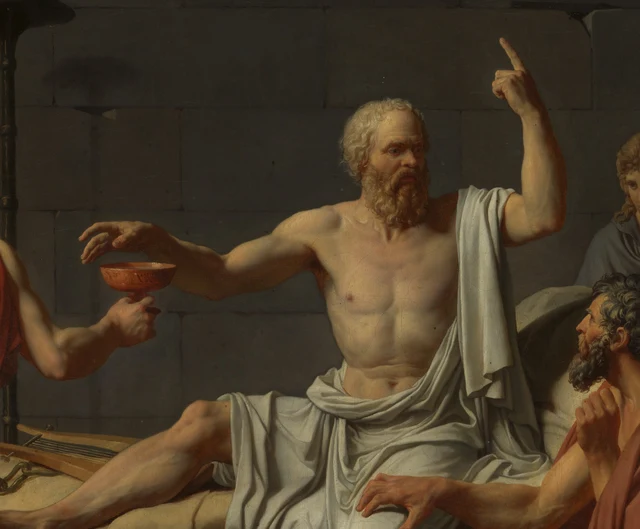
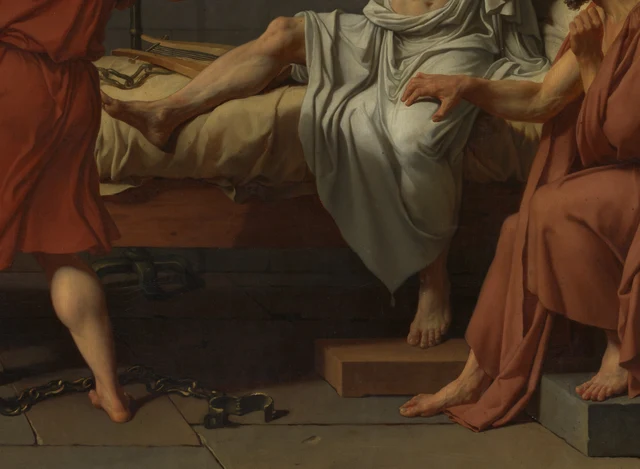

Miremos primero la mano que aún no ha tomado la copa. Los dedos se curvan sobre el borde; la otra mano, en cambio, se eleva con el índice extendido. El hombre sentado en el lecho está a punto de recibir lo que le dará la muerte, pero parece que todavía tiene algo que decir. El joven que le ofrece la copa aparta la cara sin retirar el brazo. Entre sus manos queda una distancia mínima; sus miradas, sin embargo, no llegan a encontrarse.

El episodio representado ocurrió en Atenas en el año 399 a. C. Sócrates había sido condenado a muerte y dedicó parte de su último día a conversar con sus amigos sobre el alma y la muerte. El Fedón de Platón es uno de los principales relatos de esa despedida que han llegado hasta nosotros. Cuando David pintó el cuadro habían transcurrido más de dos mil años. La obra nació de un encargo privado de la familia Trudaine y se expuso en el Salón de París de 1787, dos años antes del comienzo de la Revolución francesa. En la época de la Ilustración, el interés por los principios personales, el juicio público y las virtudes de la Antigüedad daba a estos asuntos un peso en el presente. Para entender el cuadro conviene mantener también esa fecha concreta de 1787. Catálogo académico, entrada 106
Este ensayo propone partir del gesto todavía incompleto de tomar la copa: la muerte se acerca, la discusión continúa. El cuadro presenta una figura resuelta de Sócrates y, al mismo tiempo, deja que los cuerpos que lo rodean conserven el dolor de perderlo. Si seguimos esos cuerpos, encontraremos también a alguien que no estuvo allí. Su presencia hace que esta muerte se abra, a la vez, hacia lo que vendrá después.
Todavía queda algo que decir antes de la copa
La primera impresión que produce esta cárcel es de dureza. Grandes bloques de piedra forman las paredes; las juntas entre las piedras se prolongan horizontalmente detrás de los personajes. El armazón del lecho y los asientos de piedra también tienen aristas claras. La luz no ilumina toda la estancia. A la izquierda, el fondo del arco permanece oscuro, y las figuras que se alejan por los escalones se vuelven pequeñas e imprecisas. El suelo del primer plano deja un espacio libre para que nuestra mirada recorra las losas antes de entrar en el grupo.
Los cuerpos se despliegan en sentido horizontal y resultan casi tan fáciles de distinguir como las figuras de un relieve. Los pliegues blancos tienen planos bien definidos; los hombros, las espaldas y los pechos desnudos adquieren volumen al emerger de la sombra. El color también está contenido. Entre las amplias superficies pardogrisáceas del muro y del suelo, los rojos, amarillos y paños azules se concentran en las figuras. El rojo del joven que ofrece la copa atrae especialmente la mirada hacia la zona central izquierda; después, su brazo la conduce hasta el recipiente. La claridad y el orden asociados al neoclasicismo tienen aquí formas concretas. No implican que todos los personajes estén reprimiendo sus emociones.
El cuerpo de Sócrates es el más luminoso y también el más descubierto. La tela cae desde el hombro y se reúne en la cintura, dejando al descubierto gran parte del pecho y del abdomen. La cabeza está alta, el torso erguido, y una pierna se extiende sobre el lecho. Es un cuerpo vigoroso e idealizado, alejado del hombre de unos setenta años que era el Sócrates histórico. Primero nos hace sentir una vida todavía llena de fuerza. Así, la muerte anunciada en el título se vuelve más inminente: lo que va a interrumpirse es la vida de ese hombre que aún habla, tiende la mano y se vuelve hacia los demás.

El movimiento de la mano derecha es mínimo. Los dedos aún no agarran la copa, pero tampoco se retiran. Bastaría con avanzar un poco para que el objeto pasara de una mano a otra. La izquierda, en cambio, prolonga el gesto por encima de la cabeza, y el índice extendido se distingue con claridad ante el muro oscuro. Entre los dos brazos quedan el pecho, el rostro y la boca abierta. Podemos leer en esas relaciones dos tiempos que transcurren a la vez: una mano se dirige hacia un desenlace irreversible; la otra todavía abre espacio para una frase.
La sensación de que sigue hablando también procede de los ojos. Sócrates no baja la cabeza para mirar el borde de la copa, sino que vuelve la cara hacia el lado de sus oyentes. El joven que la ofrece hace lo contrario: el cuerpo y el brazo cumplen su cometido, mientras la cabeza se inclina y se aparta, y la otra mano se acerca a los ojos. La copa une a los dos hombres, pero no establece una mirada recíproca. Uno se orienta hacia una conversación que aún puede continuar; el otro soporta el peso de lo que debe entregar.
Estamos ante el momento anterior a recibir la copa, no ante un cuerpo ya debilitado por haber bebido el veneno. En el Fedón, las discusiones principales, la ingestión del veneno, el llanto de los compañeros y el momento de acostarse se suceden. David concentra la fuerza de la conversación y de la despedida en el instante de la entrega, de modo que podemos verlas juntas. La pintura no necesita contar el último día paso a paso para hacer que todo ese tiempo pese sobre una sola copa. Fedón, 117a–118a
La imagen terminada parece segura de cada gesto, aunque su elaboración pasó por cambios. Los estudios técnicos del Metropolitan Museum han revelado modificaciones en la posición del antebrazo y en el contorno de los dedos. La distancia casi inexistente entre la mano y el borde de la copa es una relación construida por el pintor. Investigación técnica Sabiendo esto, volvamos a mirar ese pequeño intervalo. Permite reconocer la entrega y, al mismo tiempo, conserva la tensión de algo que todavía no ha terminado de ocurrir. El cuadro no necesita una lucha más violenta para producir la crisis: la sitúa en el instante siguiente.
Las razones no detienen el dolor de los cuerpos
Los hombres a la derecha de Sócrates están muy juntos. El que ocupa la primera fila, envuelto en una tela de rojo terroso, levanta la vista hacia él. Una mano queda cerca de su propio mentón; la otra descansa sobre el paño que cubre el muslo de Sócrates. Detrás, dos rostros jóvenes se asoman por encima de los hombros, todavía atentos al hombre que habla. Más a la derecha, uno inclina la cabeza y esconde la cara entre las manos; otro lleva ambas manos junto a las mejillas y echa el cuerpo hacia atrás. En el extremo del grupo, una cabeza se alza y una palma se extiende hacia fuera del cuadro.

Estas reacciones no forman una sucesión ordenada. Algunos todavía se acercan, otros ya retroceden; unos intentan retenerlo con los ojos, otros solo pueden taparse los suyos. Tampoco actúan igual las dos telas rojas más cercanas. La del joven de la copa enlaza la espalda que se vuelve con el brazo que sigue extendido hacia delante. Los pliegues del hombre sentado junto al lecho caen hacia abajo y lo asientan en una posición baja, desde la que mira a Sócrates. Esos dos cuerpos de colores cálidos se aproximan por ambos lados al blanco del centro, pero no realizan el mismo gesto.
La mano que toca el muslo merece una pausa. El dedo levantado de Sócrates señala hacia lo alto; la mano de su amigo se posa en el cuerpo que todavía puede tocar. Aunque uno entienda sus argumentos sobre el alma, esa persona sigue aquí: tiene calor, tiene peso y ocupa un lugar que pronto quedará vacío. La mano no impide que tome la copa ni se convierte en un tirón inequívoco. Mantiene el contacto. El dolor no necesita demostrar que tiene más razón que el argumento; hace que el argumento se enfrente al hecho de que una persona concreta dejará de acompañar a los demás.
El Fedón tampoco convierte ese día en un canto de aprobación unánime. Al comienzo, el narrador recuerda cómo alternaban en él la alegría y la pena. Después de que Sócrates bebe, explica que sus lágrimas se deben a la pérdida de un compañero como él. La discusión puede cambiar la manera de entender la muerte sin deshacer de inmediato el apego. Los personajes del cuadro pueden verse así como quienes sufren esa pérdida, y no solo como figuras que sirven para destacar la firmeza del protagonista. Fedón, 58e–59b y 117c–e
Esto también cambia el peso de la palabra «valentía». Si solo observamos el brazo levantado de Sócrates, resulta fácil convertirlo en una máxima aislada. Al mirar los cuerpos que lo tocan, se acercan a él o se retiran, vemos que su decisión ocurre entre vínculos humanos. El cuadro elogia la constancia, pero los gestos de los demás siguen mostrando su coste. No hace falta considerar inferiores a quienes se cubren el rostro para reconocer la fuerza del hombre que ocupa el centro.
Bajemos un poco más la mirada. Los grilletes abiertos y las cadenas están en el suelo, y los tobillos de Sócrates quedan descubiertos. Las ataduras se han retirado, pero el encierro continúa. El cuerpo puede moverse, aunque dentro de esa sala no se pueda eludir el desenlace que se aproxima. La cadena descansa sobre las losas; sus escasos destellos metálicos se cruzan con los pies, la tela y la madera del lecho, dando al relato antiguo unas condiciones materiales casi palpables. David sitúa la discusión filosófica en un lugar donde es posible sentarse, estirar una pierna y también ser ejecutado.

Sobre el lecho, junto a la pierna extendida, hay una lira. Apenas llama la atención, pero puede devolvernos a las preguntas que siguen abiertas durante el diálogo. En el Fedón, Simias presenta una objeción mediante la relación entre el instrumento y la armonía: si el alma se parece a la armonía que produce una lira, ¿cómo puede seguir existiendo cuando el instrumento se destruye? Sócrates responde después a esa comparación. Al comienzo del diálogo también cuenta que, siguiendo la indicación de un sueño, ha intentado componer poemas, y relaciona la filosofía con la práctica de la música. La lira pintada puede enlazar con esos distintos hilos, sin quedar encerrada en un único significado. Fedón, 60d–61b, 85e–86d y 91c–95a
Con ello, el índice levantado también invita a otra lectura. Tiene un gesto de autoridad, pero el texto que rodea esta escena sigue admitiendo preguntas, respuestas y correcciones. En el diálogo, Sócrates recuerda a sus amigos que deben preocuparse por la verdad del razonamiento, en vez de limitarse a darle la razón a él. Este ensayo propone devolver su postura de hablante a ese proceso. La firmeza puede ser la capacidad de seguir discutiendo; no exige suponer que todas las preguntas hayan desaparecido. Fedón, 89d–91c
Por qué está aquí quien no estuvo presente
Si seguimos únicamente la copa y el grupo de la derecha, es fácil pasar por alto al anciano de la esquina inferior izquierda. Está sentado a los pies del lecho, con el cuerpo vuelto hacia el lado opuesto, la cabeza baja y las manos superpuestas sobre las piernas. La tela gris blanquecina lo envuelve y sus pliegues menudos descienden por las rodillas. No alarga la mano para incorporarse a la acción central. Sin embargo, junto a sus pies hay rollos, útiles de escritura y un tintero. Mientras las reacciones de los demás se expanden hacia fuera, su postura parece recogerlo todo hacia dentro.

A este anciano se lo suele identificar con Platón. Sin embargo, al enumerar a los presentes el último día, el Fedón dice expresamente que Platón estaba probablemente enfermo. Cuando murió Sócrates todavía era joven; en el cuadro ya tiene el cabello blanco. Hay además una distinción fundamental: el narrador del Fedón es Fedón, que cuenta a otro hombre lo que vio y oyó en la cárcel. Platón es el autor que escribió el diálogo. El acontecimiento, el relato del testigo y la escritura del autor pertenecen ya a niveles distintos. Fedón, 57a–59c
Por eso no podemos entender sin más a ese anciano como alguien que recuerda una escena presenciada por él. David hace entrar en la cárcel al autor de un relato posterior y reúne tiempos diferentes en una misma habitación. En el centro, una voz está a punto de interrumpirse; a los pies del lecho, la escritura permitirá que sus palabras sigan circulando. El mismo lienzo representa la pérdida y da cabida al relato de esa pérdida. Esta es la interpretación que propone el ensayo para esa disposición.
Su quietud también guarda una relación formal con el cuerpo erguido de Sócrates. Uno se inclina hacia abajo, el otro se eleva; uno envuelve el cuerpo en tela, el otro descubre el pecho; uno superpone las manos, el otro abre los brazos. No se miran, pero nuestros ojos pueden unirlos. El paño gris blanquecino de la izquierda también responde, desde lejos, a la tela blanca y luminosa del centro. Así, el hombre apartado hacia el borde no desaparece de la composición.
La diferencia entre los dos lados de la habitación ya no consiste solo en cuántas figuras se agrupan en cada uno. A la derecha, los hombres convierten la despedida en numerosas reacciones corporales del presente. A la izquierda, el anciano y los útiles de escritura la prolongan hacia después. Más lejos, algunas figuras se marchan bajo el arco y la escalera conduce a un exterior que no podemos ver. La prisión encierra a Sócrates, pero el cuadro deja más de una salida para lo sucedido: quienes se alejan, quienes continúan contándolo y quienes vuelven a leer la historia delante de la pintura.
Esto ayuda a entender por qué una pintura de historia no puede juzgarse únicamente por su supuesto parecido con los hechos tal como ocurrieron. La claridad de los muros, los objetos y los pliegues proporciona una textura creíble al escenario, mientras que las edades de los personajes y la secuencia de los acontecimientos pueden reorganizarse. David reúne en un cuadro los textos antiguos que ha leído, sus decisiones plásticas y las preocupaciones del público del siglo XVIII. Vemos una manera en que la historia adquiere forma después de suceder. La presencia de Platón hace que ese «después» se siente ante nosotros.
Volvamos por fin a la primera mano. Todavía no ha tomado la copa, y los hombres que la rodean siguen ocupados en gestos distintos. Conocer el desenlace no significa que en el cuadro solo quede ese desenlace por mirar. Ahora también podemos ver cómo el hablante se dirige a sus oyentes, cómo ellos soportan la pérdida y cómo otros seguirán contándola. La muerte detendrá los movimientos de un cuerpo; la pintura mantiene la última discusión orientada hacia los demás. Esa es la parte aún inconclusa que este ensayo quisiera seguir escuchando dentro de su gesto resuelto.
Lectura opcional Preguntar por esta firmeza con SAE
La estética SAE, Self-as-an-End, permite añadir una pregunta a nuestra observación; la lectura anterior se sostiene por sí sola. SAE distingue las maneras personales de sentirse conmovido de los fundamentos estructurales que podemos discutir en común. Sus diferentes «rayos» sirven como direcciones de indagación, sin asignar rangos a las obras. Panorama del juicio y la estética SAE
Ante este cuadro es fácil decir de inmediato que representa la valentía. Podemos dejar esa afirmación en suspenso y recorrer las relaciones entre las manos: la que va a tomar la copa, la que se alza, la que tapa los ojos, la que toca el muslo y, por último, las manos superpuestas de Platón. Cada desplazamiento cambia la situación del personaje central. Acepta la sentencia y sigue hablando; alguien le entrega lo que le dará la muerte, otro mantiene el contacto y otro conserva el acontecimiento en los relatos posteriores. Si la impresión general de «valentía» se sostiene, debe poder incluir esas relaciones. Un solo gesto heroico no basta para garantizarla.
También podemos comparar dos juicios después de mirar. El primero admira únicamente que Sócrates no tenga miedo. El segundo sigue admirando su fuerza, pero ya no puede ignorar el rostro apartado del joven ni la mano del amigo que permanece sobre su cuerpo. Lo que añade el segundo no es una palabra de elogio más intensa, sino detalles que la interpretación debe tener en cuenta. La idea de SAE de que la belleza puede seguir interrogándose se convierte aquí en una exigencia concreta: nuestro juicio sobre la obra debería resistir que devolvamos al cuadro a las personas que habíamos pasado por alto.
La teoría puede ayudarnos a devolver la «valentía» a unas relaciones visibles sobre las que cabe hacer preguntas. Si omitimos el rostro apartado del joven o la mano del amigo posada sobre el muslo, ¿qué le falta a nuestra comprensión de esa valentía? Para responder, volvamos al espacio que rodea la copa y comprobemos si la admiración inicial todavía puede expresarse de una forma tan sencilla.
Sobre las imágenes y las fuentes
Las observaciones visuales de este ensayo se basan en la imagen oficial de 4000 × 2663 píxeles facilitada por el Metropolitan Museum of Art. La vista completa conserva intacto el archivo descargado. Las figuras 2 a 5 son únicamente recortes rectangulares, sin ajustes de color, restauraciones, añadidos pictóricos ni contenido generado. La imagen digital permite comparar gestos y detalles, aunque el brillo de la pantalla, el tamaño de visualización y las condiciones de observación difieren de los de la obra original.
El museo identifica la imagen de la obra como de dominio público y la ofrece conforme a su política Open Access / CC0. Esa apertura no se extiende a todos los derechos de sus artículos modernos, sus catálogos académicos o sus imágenes técnicas. El ensayo se apoya ante todo en una lectura visual independiente y en una reformulación propia de los textos antiguos; los datos históricos y los hallazgos técnicos necesarios van acompañados de sus fuentes. Las interpretaciones propuestas no implican el respaldo del museo. Véanse también las referencias y el registro de imágenes y licencias incluidos en este paquete.